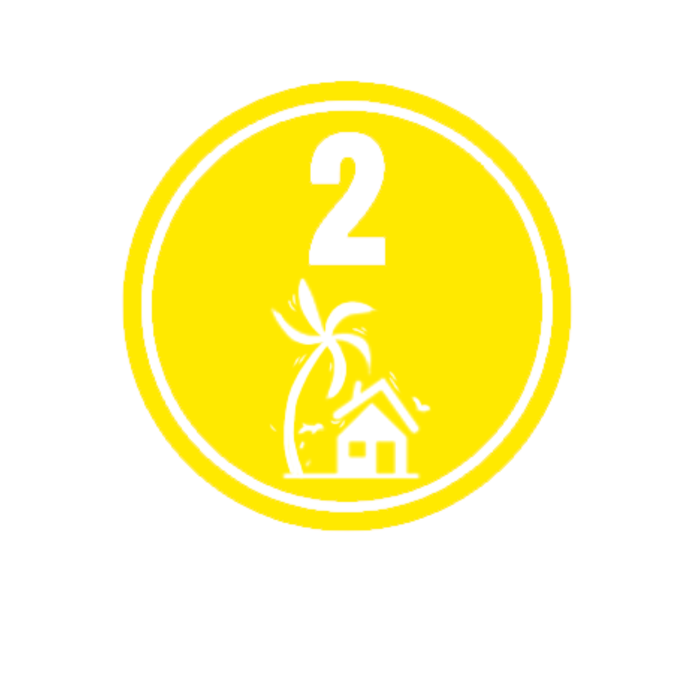

- 
2- Gale-force winds
Warning Lead Time: 24 hours
Potential Impacts
-Minor to moderate damage may occur to makeshift or old dilapidated structures, and other structures made of light materials. Houses of poor and average construction (e.g., unreinforced CHB/masonry, mixed timber-CHB) may receive minor roof damage.
-Unsecured, exposed lightweight items may become projectiles which may cause additional damage.
-Some electrical wires may be blown down, resulting in local power outages.
-Minor to moderate disruption to public transportation.
-Most banana and similar plants are titled, with some stooped or downed. Some small trees blow over, with twigs and branches of frail trees broken. Considerable damage is likely to rice and other similar crops, especially those in flowering and ripening stages.
- Go Back